Introduction to TMA Support in NVFuser
Introduction
TMA is a hardware feature that allows the GPU to load a tile from a tensor of up to 5D. The tile can be dense, or strided, as shown in Figure 1 below:

When using phrases like “tile size”, it is important to be clear what we are referring to. Here we use two separate words box and tile to refer to different things.
Definition 1: In an N-dimensional tensor, a box of size (s1, s2, ..., sN) at
(x1, x2, ..., xN) refers to all the s1*s2*...*sN items at (x1, x2, ..., xN),
(x1, x2, ..., xN + 1), …, (x1, x2, ..., xN + sN - 1), …, (x1 + s1 - 1, x2 + s2 - 1, ..., xN + sN - 1).
Definition 2: In an N-dimensional tensor, a tile of size (s1, s2, ..., sN) and stride
(r1, r2, ..., rN) at (x1, x2, ..., xN) refers to all the s1*s2*...*sN items at
(x1, x2, ..., xN), (x1, x2, ..., xN + rN), …, (x1, x2, ..., xN + rN * (sN - 1)),
…, (x1 + r1 * (s1 - 1), x2 + r2 * (s2 - 1), ..., xN + rN * (sN - 1)).
In Figure 1, we have box size (8, 4) for both diagram.
For the diagram on the left, we have tile size (8, 4) and stride (1, 1).
For the diagram on the right, we have tile size (8, 2), and stride (1, 3).
Note that TMA PTX instructions and CUDA driver API uses column-major,
and we want to be consistent with them.
So here we say we have box size (8, 4) instead of (4, 8).
Box and tile for the above example is shown below in Figure 2:
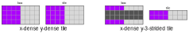
Schedule
In order to use TMA, we need to tell the hardware what is the dimensionality of our tensor. Most naively, we can make this dimensionality the size of the allocation domain. This naive mental model does provide us an easy way to reason about and start using TMA, but unfortunately it is not flexible enough and is not consistent with how we think about scheduling. For example, if we want to schedule a fusion containing only pure pointwise (i.e. no broadcasting) operations and all input and output tensors are contiguous, regardless of the actual dimensionality of the input and output tensors, in our mental model, we always consider this problem as a 1D problem by viewing all tensors as flattened 1D tensor. For this case, ideally, we should be using 1D TMA, instead of using the actual dimensionality of the tensor. That is, the dimensionality of TMA is not necessarily the same as the dimensionality of the tensor.
In order to support the flexibility of using a dimensionality of TMA different from the dimensionality of the tensor, we design the scheduling of TMA as a multiple-step process:
Step 1: define TMA domain
When a user is ready to schedule the consumer of the TMA expression, the user should already have an idea of how the problem should be viewed. For example, if the user is scheduling a fusion with only pure pointwise ops, the user would want to view the problem as a 1D problem. If the user is scheduling a transpose, then the user might want to view the problem as 2D. If the user is scheduling a matmul, then the user might want to view the problem as 3D. From this view of the problem, the user should have an idea about what are the dimensionalities of tensors.
For example, if the user wants to schedule a matmul (M1, M2, K1, K2, K3) x (K1, K2, K3, N) -> (M1, M2, N),
then in the mind of the user, this matmul will be a 3D problem (M1*M2, K1*K2*K3, N).
In this mental model, the input and output tensors are all 2D:
(M1*M2, K1*K2*K3), (K1*K2*K3, N), and (M1*M2, N).
The first step of scheduling TMA is to schedule the consumer of the TMA expression the way matching the mental model of the problem. The result domain of this step is called the TMA domain.
The TMA domain for the above matmul example is shown in the Figure 3 below:
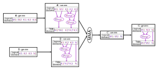
Please note that the TMA domain is not a member of a TensorDomain like the root/logical/allocation/loop domains. Instead, it is a virtual domain that only exists in the user’s mind.
Also note that the IterDomain expressions between the global tensor’s allocation domain and the TMA domain must be a view, for example, we can not merge discontiguous IterDomains (why?), and we can not have indivisible splits either.
Step 2: define box
After having scheduled a TMA domain, the next step is to define box. There are two ways of defining box: partitioning and compositing.
The canonical way to define box
The canonical way to define box is by partitioning. It is as simple as: select an IterDomain in the TMA domain, then inner split that IterDomain by the box size of that dimension.
We call this split expression a “boxing split”, the input of this split a “partitioned IterDomain”, the inner output of this split a “box IterDomain”, and the outer output of this split a “coordinate IterDomain”.
For the case of Figure 1, if both box dimensions are defined by partitioning, the schedule should look like the Figure 4 below:
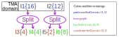
Please note that, although in the above example, the split is divisible, this does not have to be the case in general.
Define box by mathematical equivalence
Ideally, for an arbitrary schedule, as long as there exist a canonical way of defining box that is mathematically equivalent to this schedule, during lowering, we should be able to automatically translate this schedule to the canonical way and infer all the informations needed for generating a TMA instruction.
Mathematical equivalence of IterDomain transformations is studied in The Mathematical Theory of IterDomain.
In practice, supporting all mathematical equivalence is not possible. Just like expression simplification, NVFuser does the mathematical equivalence analysis in a best effort manner. Some known supported mathematical equivalence are listed below:
Define box by compositing
Mathematically, if we merge two IterDomains [I0, I1] together and split with the factor of I1’s extent, we get back equivalent IterDomains.
Visually, we have the Figure 5 below:
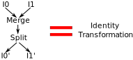
TODO: add a proof to The Mathematical Theory of IterDomain
By taking advantage of this mathematical equivalence property of IterDomain transformations, we have the following “define box by compositing” strategy:
Define box by compositing is to select a slice of IterDomains from the TMA domain and consider the innermost IterDomain(s) in the slice as box.
The IterDomains within the slice must be contiguous to each other.
For example, if the TMA domain of a tensor is T[I1{1024}, I2{2}, I3{4}, I4{8}], and the tensor is contiguous,
then we can select [I3{4}, I4{8}] as box IterDomains.
This defines boxes of size 32, and there are in total 2048 boxes.
It is helpful to imagine the tensor as its canonical form, as shown in the following Figure 6:
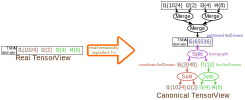
In this mental model, I1, I2, I3 and I4 were first imaginarily merged to form I5.
Then we defined box on I5 by partitioning.
The terms used in defining box by partitioning is also valid here,
the only difference is that these terms now refers to imaginary splits and IterDomains instead of real ones.
For convenience, we also call [I3, I4] “box IterDomain”
(Note that we never call I3 or I4 itself a box IterDomain,
we only call I3 and I4 together box IterDomain).
Similarly, we call [I1, I2] “coordinate IterDomain”.
As we can see in Figure 6, when we define box by compositing, the dimensionality of the TMA domain does not equal to the dimensionality of the TMA instruction. Instead, the dimensionality of the imaginary TMA domain equals to the dimensionality of TMA instruction.
Note that the number of IterDomains selected as box in a slice can be arbitrary. It can be as small as 0 IterDomains, or as large as the entire slice. When 0 IterDomains are selected as box, the box size is implicitly one. For this case, we call this box dimension “implicit size-one”. When the entire slice is selected as box, the tensor only have one box on that dimension, and the size of the box equals the size of that dimension. For this case, we call this box dimension “implicit whole”.
Define box by rotation
The name “rotation” comes from tree rotation. According to Theorem 2.1 in The Mathematical Theory of IterDomain, the IterDomain transformations in the Figure 7 below are equivalent:

We support defining boxes by both rotating left and rotating right. For example, in the Figure 8 below:
For the schedule on the left hand side of Figure 8,
if we define [I3, I4] as the box IterDomain.
Because the schedule on the left hand side is mathematically equivalent to the schedule on the right hand side,
we can imagine the schedule on the left hand side as the right hand side,
and consider I1 as the box IterDomain.
Similarly, for the schedule on the right hand side,
if we define I4 as the box IterDomain.
Because the schedule on the right hand side is mathematically equivalent to the schedule on the left hand side,
we can imagine the schedule on the right hand side as the left hand side,
and consider I5 as the coordinate IterDomain.
Note that in order to be able to rotate the right hand side schedule as the left hand side,
the split defining I4 must be divisible.
However, the split defining I1 does not have to be divisible.
This way of thinking is illustrated in the Figure 9 below:
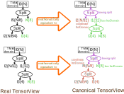
It is possible to define box by multiple rotation, as shown in the following Figure 10:
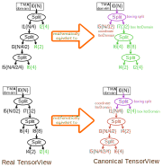
Mixing different strategies
We can use different box defining strategies together at the same time in the same tensor. For example, in Figure 11 below:
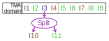
The TMA domain of the tensor has nine IterDomains.
The contiguities of these nine IterDomains are (T, T, T, F, T, T, T, T, T).
We scheduled a 5D TMA operation, where in these five dimensions, one of them defines box by partitioning, and others define box by compositing.
There is no other box defining strategies used.
Green color means box IterDomain and brown color means coordinate IterDomain.
The first dimension is [I1, I2], where I1 is coordinate IterDomain and I2 is box IterDomain.
The second dimension is I3, it is the only dimension that defines box by partitioning.
I3 is the partitioned IterDomain, I11 is the box IterDomain, and I10 is the coordinate IterDomain.
The third dimension is I4, it has no box IterDomain, therefore, the box size is implicitly one.
The fourth dimension is [I5, I6], it has no coordinate IterDomain, therefore this dimension only has one box,
whose size is the product of the extents of I5 and I6.
The fifth dimension is [I7, I8, I9], where I8 and I9 are box IterDomain, and I7 is coordinate IterDomain.
The imaginary TMA domain has five IterDomains, they are merge(I1, I2), I3, I4, merge(I5, I6), and merge(I7, I8, I9).
Step 3: define tile
TMA’s tile can be dense or strided. Most commonly, we use dense tile. For dense tile, we define the tile IterDomain as the box IterDomain, and use the word tile and box interchangeably.
For strided tile, we do an inner-split on the box IterDomain by the element stride. We call this split “striding split”, the inner output of this split “stride IterDomain”, and the outer output of this split “tile IterDomain”. For the example in Figure 1 on the right hand side, the schedule looks like the Figure 12 below:
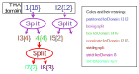
Note that if the box is defined by compositing, the box IterDomain can be a list of IterDomains instead of a single IterDomain. If we want to define a strided tile in this case, we need first merge all these IterDomains to get a single box IterDomain then do the striding split. It is wrong to just do the striding split on the innermost box IterDomain without merging them first, and the former is not equivalent to the latter as discussed in Divisibility of Split.
[!WARNING] When the element stride does not divide and is smaller than the box size, and the tensor size is larger than the box size, extra care is needed because there are holes not filled with zero. This is called “The fundamental theorem of TMA correctness”, or FTTC in short. See TMA Modeling In Depth for more detail.
Step 5: schedule the consumer tensor
In nvFuser, the consumer dictates the loop nests and parallelization of an expression, and the loop domain of the consumer has the responsibility of specifying these information.
Most generally, when we enter this step, we might see the loop domain of the consumer tensor already scheduled partially, as shown in the Figure 18 below:
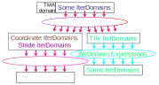
It is important to note that, tile IterDomains and non-tile IterDomains must be transformed separately in the consumer of a TMA expression. Transforming tile IterDomain and non-tile IterDomain together, such as merging a tile IterDomain with a non-tile IterDomain, is an error in the schedule.
We are not interested in further transforming the tile branch in this step,
because TMA only cares about the boxing and striding split.
However you transform the tile IterDomains after they are created by the boxing/striding split will just be ignored.
So we just immediately parallelize all the IterDomains in the loop domain from the tile branch as ParallelType::Bulk without doing any transformation.
Oh, well, I may be wrong.
Sometimes, merging all of these IterDomains first then parallelize the merged IterDomain as ParallelType::Bulk takes less keystrokes.
So, maybe do the latter instead of the former.
Anyway, we can just pick whatever the most convenient way to parallelize all these IterDomains as ParallelType::Bulk.
Like ParallelType::Vectorize, IterDomains parallelized with ParallelType::Bulk will be lowered as trivial loops, so they will not appear in the generated C++ code.
[!WARNING] Due to the limitation of our current indexing approach, the consumer must be transformed the same way as the producer. So we need to repeat the schedule of the TMA store’s shared memory tensor’s allocation domain in the consumer so that the indexing won’t fail.
The interesting thing to us is the non-tile branch, because the transformation and parallelization here defines which CTA get which tiles, and within each CTA, how do we want to tranfer these tiles (do we select a single thread and within this thread use a for loop to transfer all tiles, or do we use multiple threads each in charge of transfering one tile, or something else?). We do have the flexibility to arbitrarily transform and parallelize the non-tile branch, and scheduling this is very similar to how we schedule other fusions.
Code walk-through
Please go to test_tutorial.cpp and search TEST_F(Tutorial, BasicTMA).
Examples
Example 1: tma-load inputs and vectorize-store output pointwise kernel
Please go to test_tutorial.cpp and search TEST_F(Tutorial, VectorizeStorePointwiseTMA).
Fusion:
inputs:
T0[I0, I1] contiguity: T, T
T1[I0, I1] contiguity: T, T
math:
T2[I0, I1] = T0[I0, I1] + T1[I0, I1];
outputs:
T2[I0, I1] contiguity: T, T
Schedule:
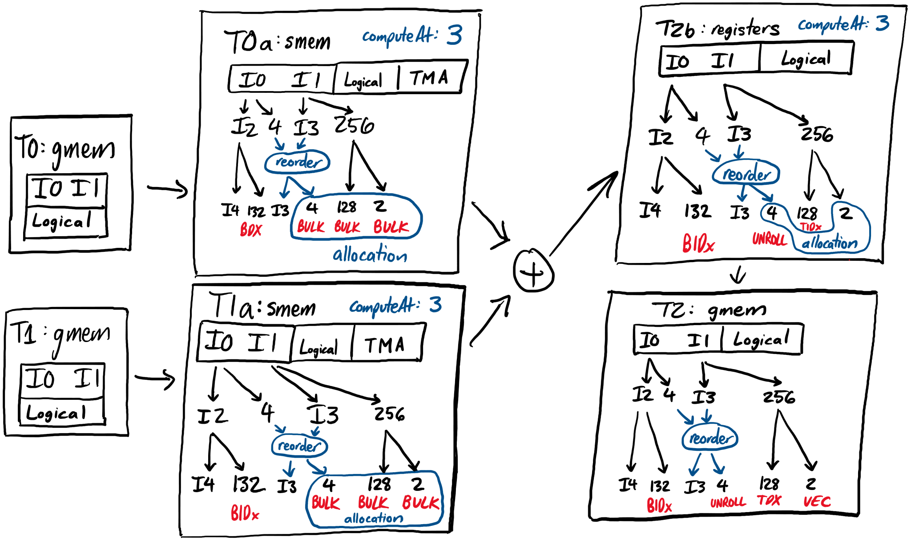
Example 2: broadcast kernel with discontiguous input
Please go to test_tutorial.cpp and search TEST_F(Tutorial, PointwiseBroadcastTMA).
Fusion:
inputs:
T0[I1, I2, I3] contiguity: T, T, T
T1[I0, I1, I2, I3] contiguity: T, F, T, T
math:
T2[b, I1, I2, I3] = broadcast(T0[I1, I2, I3])
T3[I0, I1, I2, I3] = T1[I0, I1, I2, I3] + T2[b, I1, I2, I3]
outputs:
T3[I0, I1, I2, I3] contiguity: T, T, T, T
Schedule:
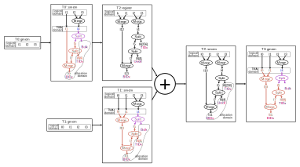
Example 3: bank-conflict-free transpose of 32bit data
Fusion:
inputs:
T0[I0, I1] contiguity: T, T
math:
T1[I1, I0] = transpose(T0[I0, I1])
outputs:
T1[I1, I0] contiguity: T, T
Schedule:
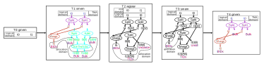
Please go to test_tutorial.cpp and search TEST_F(Tutorial, TMABankConflictFreeTranspose) for code.